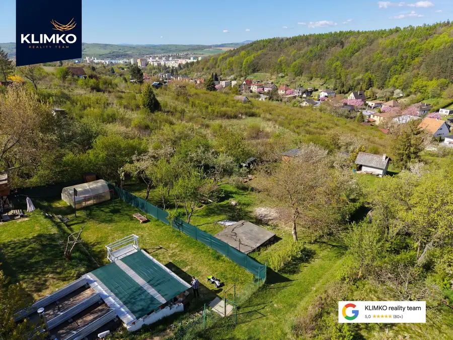
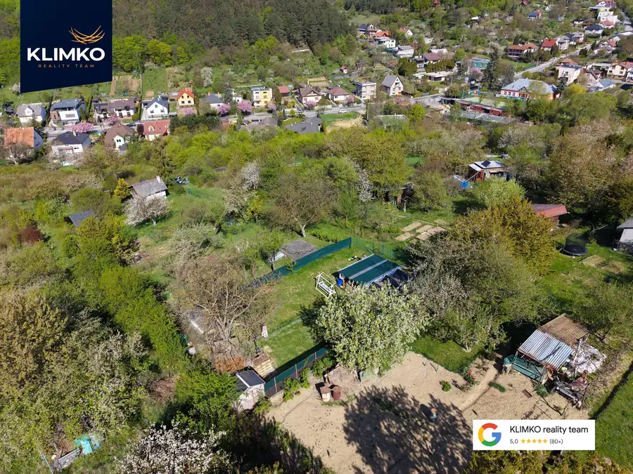
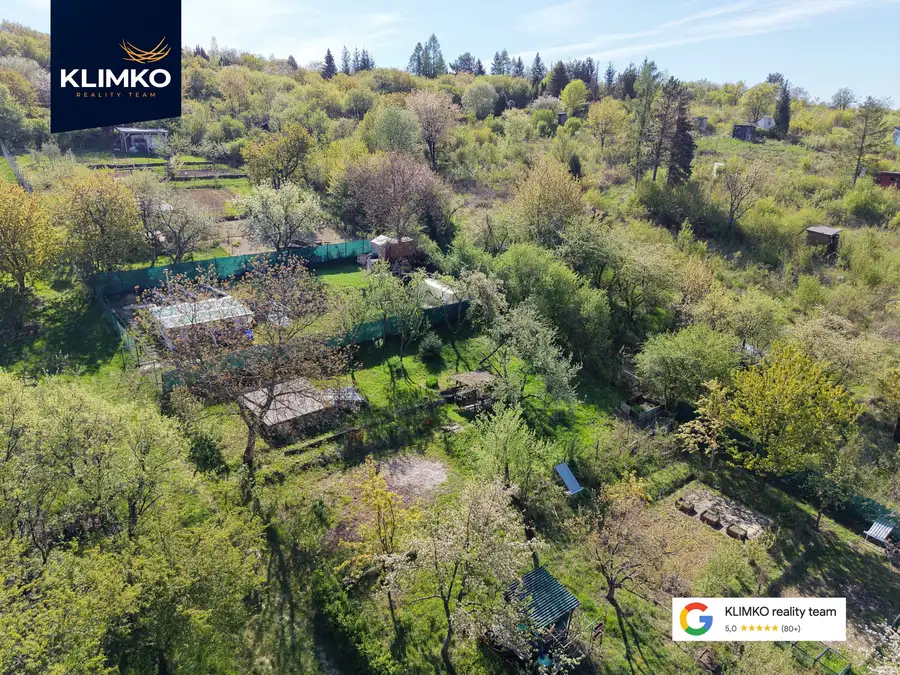
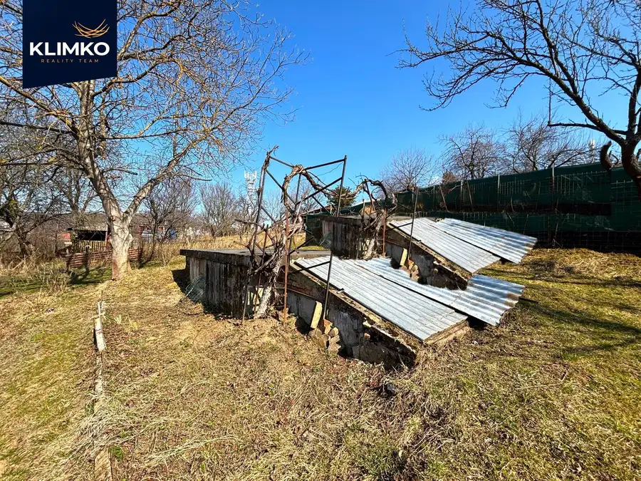

Slnečná záhrada s panoramatickým výhľadom – Šidlovec
Prešov





- Plocha395 m²
O nehnuteľnosti
Hľadáte miesto, kde „vypnete od mestského ruchu, a pritom zostanete v Prešove? Ponúkame na predaj záhradu v obľúbenej lokalite Šidlovec o výmere 395 m².Záhrada sa nachádza v kaskádovitom teréne (v kopci), čo majiteľa odmeňuje nádherným výhľadom na okolie a maximálnym súkromím. Je ideálna pre milovníkov záhradkárčenia, ktorí hľadajú pokoj a kontakt s prírodou.-Lokalita: Prešov - Šidlovec-Výmera: 395 m²-Stav: Bez elektriny a vody (možnosť riešiť zberom dažďovej vody)-Bonus: Tiché prostredie, čistý vzduch a slnečný pozemok po celý deň.Vytvorte si svoj vlastný zelený raj v jednej z najžiadanejších lokalít mesta!DOHODNITE SI OBHLIADKU:Simona Rusnáková0915 312 875simona@klimkoreality.skKLIMKO reality team
Parametre
- Druh
- Záhrada
- Dátum zverejnenia
- 31. 03. 2026
- Dĺžka pozemku
- 24
- Elektrina
- Nedostupné
- Odpadové vody
- Nedostupné
- Plocha pozemku
- 395 m²
- Plyn
- Nedostupné
- Prístupová komunikácia
- Neupravená
- Terén pozemku
- Svahovitý
- Typ
- Predaj
- Voda
- Nedostupné
- Šírka pozemku
- 17